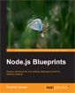

Node.js
Blueprints
Develop stunning web and desktop applications with the definitive Node.js
01
Common programming paradigms in NodeJS
Nodejs is JavaScript driven technology. As such we may apply common design patterns know in JavaScript.
02
Developing a basic site with Node.js and Express
ExpressJS is one of the top frameworks. It's important to know it, because it's kinda fundamental knowledge in Nodejs world. At the end of the block you will be able create applications by using the build-in Express modules and also adds your own.
03
Writing a blog application with Node.js and AngularJS
In this block you will learn how to use front-end framework like AngularJS together with Node. The block's example is actually dynamic application working with real database.
04
Developing a real time chat with Socket.io
Nowadays every big web app uses real time data changing. It's important to show instant result to the users. This block covers creation of a simple real time chat. The same concept could be used to create automatically updatable HTML component.
05
Creating simple Todo application with BackboneJS
BackboneJS was one of the first frameworks introducing the data-binding in the front end side of the applications. The block will show how the library works. The Todo app is a simple example, but perfectly illustrates how powerful is the framework.
06
Using Node.js as command line tool
This block covers the creating of a simple CLI program. They are bunch of command line tools written in Nodejs. The ability to create your own is kinda nice. This part of the book will present simple application which grabs all the images in a directory and upload them to Flickr.
07
Showing social feed with EmberJS
The EmberJS example will read a twitter feed and will display the latest posts. That's actually a common task to every developer, because a lot of applications need to visualize social activity.
08
A modern web app workflow with GruntJS
There are bunch of things to do before to deliver the application to the users. Concatenation, minification, templating and so on. GruntJS is de facto standard for such tasks. This module could optimizes and speeds up your workflow. The block presents a simple application setup including managing of JavaScript, CSS, HTML and cache manifest.
09
Automate your testing
The tests are really important for every application nowadays. Nodejs has some really great modules for that. If you are fen of of test driven development this block is for you.
10
Start writing flexible and modular CSS
Two of the most popular CSS preprocessors are written in Nodejs. This block is like a little presentation of them and of course contains styling of a simple web page.
11
Writing REST API
Nodejs is fast working technology and it is perfect candidate for building REST API. You will learn how to create simple API for storing and retrieving data for books. I.e. online library.
12
Desktop apps development with Node.js
Nodejs is not only a web technology. There is a way to create desktop apps. It's really interesting that you may use HTML, CSS and JavaScript to create desktop programs. A simple file browser may be not so challenging task, but it will give you enough knowledge to build yout own applications.
The author
Krasimir Tsonev
Krasimir Tsonev is a coder with over ten years of experience in web development. With a strong focus on quality and usability he is interested in delivering cutting edge applications. He enjoys working in the industry and has a passion for creating and discovering new and effective digital experiences.
Find him at:
http://krasimirtsonev.com/
Twitter
GitHub
Facebook
The publisher
Packt Publishing
Packt is one of the most prolific and fast-growing tech book publishers in the world. Originally focused on open source software, Packt pays a royalty on relevant books directly to open source projects. These projects have received over $400,000 as part of Packt’s Open Source Royalty Scheme to date.
http://www.packtpub.com/